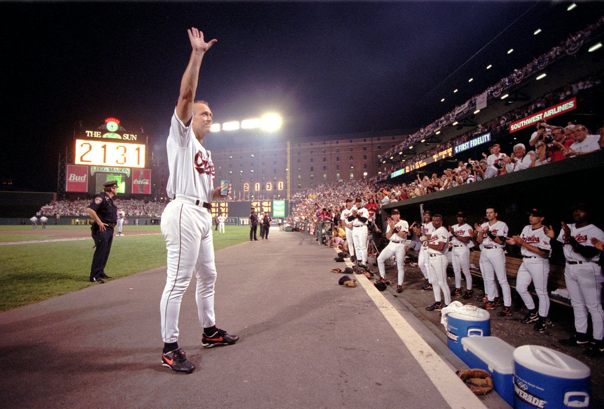

<!DOCTYPE html>
<html lang="en">

<head>
    <!--meta-->
    <meta charset="UTF-8">
    <meta name="viewport" content="width=device-width, initial-scale=1.0">
    <meta http-equiv="X-UA-Compatible" content="ie=edge">
    <!-- seo -->
    <title>Title goes here</title>
    <meta name="description" content="Description goes here">
    <!-- css -->
    <link href="https://cdn.knightlab.com/libs/soundcite/latest/css/player.css" rel="stylesheet" type="text/css">
    <script type="text/javascript" src="https://cdn.knightlab.com/libs/soundcite/latest/js/soundcite.min.js"></script>

    <script type="text/javascript">SOUNDCITE_CONFIG = { background_color: "#fff" }</script>
    <link rel="stylesheet" href="css/style.css">
</head>

<div class = "container-fluid">
<body>
    <header>
        <div class = "col-8">
            <video src="Ripken.mp4" autoplay muted></video>
        </div>
        <div class = "col-4">
            <p class = "overline">‘Cal Ripken of spittin’, no days off'</p>
            <h1>A history of the Iron Man in rap</h1>
            <p>By <a
            href="https://www.baltimoresun.com/features/ac-cal-ripken-rap-20190906-20190906-x7bqmnqtenbn7dwii2uv6cg46q-story.html">The
            Capital Gazette</a></p>
            <p>Sept. 2019</p>
        </div>
    </header>

    <section>
        <p>Cal Ripken Jr. doesn’t listen to rap, but rappers know Cal Ripken.</p>

        <p>Known as the Iron Man for his record 2,632 consecutive game streak playing for the Baltimore Orioles,
        Ripken is
        now retired and living in Annapolis. But with 17 years out of the game and nearly a quarter century
        since his
        streak ended, his streak of hip-hop references is still going strong.</p>
        
        <p>The baseball legend has been mentioned in some shape or form in more than 50 rap songs since 1998 and as
        recently
        as this fall.
        </p>
    </section>

    <div class="graphic">
        <iframe title="Every rap reference to Cal Ripken" aria-label="USA states Symbol map"
        id="datawrapper-chart-vkfFF" src="//datawrapper.dwcdn.net/vkfFF/18/" scrolling="no" frameborder="0"
        style="width: 0; min-width: 100% !important; border: none;" height="517"></iframe>
        <script type="text/javascript">
        ! function () {
        "use strict";
        window.addEventListener("message", function (a) {
            if (void 0 !== a.data["datawrapper-height"])
                for (var e in a.data["datawrapper-height"]) {
                    var t = document.getElementById("datawrapper-chart-" + e) || document
                        .querySelector("iframe[src*='" + e + "']");
                    t && (t.style.height = a.data["datawrapper-height"][e] + "px")
                }
        })
        }();
        </script>
    </div>

    <section>
        <p>Ripken said he’s more of a country fan, but credits the relatability of his record for making him a rap
            legend.</p>
            
        <p>“I’m amazed how many people relate to the streak. It wasn’t about breaking Lou Gehrig's record. It was
        about values,” Ripken said. “I’ve heard people’s stories from being in the factory every day to teachers
        in the classroom.”</p>
        
        <p>For rappers like <span class="name">A$AP Ant</span>, the Baltimore-bred former A$AP Mob member, Ripken
        brings a dose of nostalgia into his music.</p>
        
        <p>“I grew up watching baseball. Cal Ripken was ... like a Baltimore hero. Like how Ray Lewis is,” he said.
        “That’s the one thing that we got. When people don’t know Baltimore for nothing, they know Baltimore for
        Cal Ripken. Kids looked up to him and wanted to be him.”</p>
        
        <p>Ant is one of the most recent rappers to feature Cal in his lyrics and the artwork for his single. Below,
        check out his song and the rest of Cal Ripken’s rap history.</p>
    </section>

    
    <i>In 1995 Cal Ripken Jr. acknowledges the crowd after officially breaking Lou Gehrig's record. Ripken and
        his
        legendary streak have been mentioned in many hip-hop works over the years. (Karl Merton Ferron)</i>

    <section>
        <!-- DATE -->

        <h2>1998-2001</h2>
        <div class = "col-8">
            <p>Ripken broke Gehrig’s record on Sept. 6, 1995, but it wasn’t until 1998 when he had already
            surpassed the
            record by 502 games, that he decided to end the streak. It was also this year that rap legends
            began to
            use the newly certified baseball legend in their lyrics.</p>
            
            <p>The late <span class="name">Phife Dawg</span> was Ripken’s biggest fan of this era, comparing
            himself to
            the Iron Man in two different songs. <span class="name">Lil Wayne</span> would go on to reuse
            his Ripken
            line in the song “BM J.R.” from his 2004 album “Tha Carter.”</p>
        </div>
        <div class = "col-4">
            <blockquote>
                <p class="quote">Goin' hard to the extreme, why would you go half-assed? <span class="soundcite"
                data-url="https://audiostaq.b-cdn.net/Yb6D216pNtpcNW6QWCj4.mp3" data-start="4000" data-end="7100"
                data-plays="1">Call me the Cal Ripken of the industry.</span></p>
                <p class="cite">Phife Dawg in “Lemme Find Out” from “Ventilation: DA LP” (2000)</p>
            </blockquote>
        </div>
        <p>Other mentions</p>
        <h3>1998</h3>
        
        <p>A Tribe Called Quest on “That Sh— —” from “The Lost Tribes”: <span class="soundcite"
        data-url="https://audiostaq.b-cdn.net/Yb6D216pNtpcNW6QWCj4.mp3" data-start="0" data-end="3000"
        data-plays="1">“On competition, we hittin' like Cal Ripken” (Phife Dawg)</span></p>
        
        <h3>2001</h3>
        
        <p>Lil Wayne in “Rap City Freestyle”: <span class="soundcite"
        data-url="https://audiostaq.b-cdn.net/Yb6D216pNtpcNW6QWCj4.mp3" data-start="7000" data-end="15000"
        data-plays="1">“I ain't trippin' boy, I play the corner like Ripken boy / With the 40 Cal Ripken
        boy, rip a boy”</span></p>

        <!-- DATE -->

        <h2>2002-2009</h2>

        <div class = "col-4">
            <p>In the years after Ripken retired, he only got a few more mentions. But <span class="name">Jay-Z’s</span>
            name drop, including one for Orioles gear designer Mitchell and Ness, on “The Blueprint 2” is
            one of the
            catchiest and most popular of all.</p>
        </div>
        <div class = "col-8">
            <blockquote>
                <p class="quote">Before Mitchell and Ness did it <span class="soundcite"
                data-url="https://audiostaq.b-cdn.net/Yb6D216pNtpcNW6QWCj4.mp3" data-start="17000" data-end="23000"
                data-plays="1">I was moving birds like a Oriole fitted.
                I&#x27;m Cal Ripken Jr. let&#x27;s get it.</span></p>
                <p class="cite">Jay-Z in “What They Gonna Do” from “The Blueprint 2: The Gift and the Curse”
                (2002)</p>
            </blockquote>
        </div>
        
        <p>Other mentions</p>
        
        <h3>2007</h3>
        <p>XV's “Whattup Swizzy” on his mixtape “The Definition 4”:
        <span class="soundcite" data-url="https://audiostaq.b-cdn.net/Yb6D216pNtpcNW6QWCj4.mp3" data-start="31000"
        data-end="34500" data-plays="1">“Got a Passion to be more like Cal
        Ripken.”</span></p>
        
        
        <h3>2009</h3>
        
        <p>Tyga in “Live Forever” from his mixtape “Outraged and Underage”:
        <span class="soundcite" data-url="https://audiostaq.b-cdn.net/Yb6D216pNtpcNW6QWCj4.mp3" data-start="38000"
        data-end="42000" data-plays="1">“Ripken, for clowns who don't think the Cal hit
        s&#8212&nbsp&#8212.”</span></p> 
    </section>

    <div class = "chart">
        <!-- CHART
        <i>References to Cal Ripken in rap lyrics from 1998 to Sept. 2019. (Baltimore Sun Graphic)</i> 
        -->
    </div>

    <section>
        <!-- DATE -->

        <h2>2012-2012</h2>

        <div class = "col-8">
            <p>As Ripken was long retired and his life took some twists and turns — in 2012 his mother was
            kidnapped and
            returned safely after 12 hours and his son was drafted by the Orioles — his name began picking
            up speed.
            </p>
    
            <p>White college rappers <span class="name">Hoodie Allen</span> and <span class="name">Mike
            Stud</span>
            contrast with harder artists like <span class="name">Problem</span> and <span class="name">Pusha
            T</span> for a bizarre mark on a bizarre era for Ripken.</p>        
        </div>
        <div class = "col-4">
            <blockquote>
                <p class="quote"><span class="soundcite" data-url="https://audiostaq.b-cdn.net/Yb6D216pNtpcNW6QWCj4.mp3"
                data-start="56000" data-end="59000" data-plays="1">Hall of Fame with the O's, Cal Ripken</span>
                </p>
                <p class="cite">Pusha T in Trae tha Truth’s “So far to go” in “Undisputed” (2011)</p>
            </blockquote>           
        </div>

        <p>Other mentions</p>
        <h3>2011</h3>

        <p>Hoodie Allen in “Flipping Out” from “Leap Year”: <span class="soundcite"
        data-url="https://audiostaq.b-cdn.net/Yb6D216pNtpcNW6QWCj4.mp3" data-start="45000" data-end="48000"
        data-plays="1">“I never take a day from work, I'm more like Cal E. Ripken.”</span></p>

        <p>Rone in a Grind Time Now rap battle: <span class="soundcite"
        data-url="https://audiostaq.b-cdn.net/Yb6D216pNtpcNW6QWCj4.mp3" data-start="49000" data-end="55000"
        data-plays="1">“I hit a homer with your Barbie and let the Cal' rip Ken.”</span></p>

        <h3>2012</h3>

        <p>Problem in his single “T.O.” and his hit song “Like Whaaat”: <span class="soundcite"
        data-url="https://audiostaq.b-cdn.net/Yb6D216pNtpcNW6QWCj4.mp3" data-start="60000" data-end="64000"
        data-plays="1">“Get a weight lift, reppin' Cal like Ripken I'm on fire right now.”</span></p>

        <p>Baltimore rapper King Los in “Mercy (freestyle)”: <span class="soundcite"
        data-url="https://audiostaq.b-cdn.net/Yb6D216pNtpcNW6QWCj4.mp3" data-start="73000" data-end="80000"
        data-plays="1">“Come chop it up with Los we get them birds like we Cal Ripken / Then we chop em down
        to o's / Out the 410 what's poppin' b&#8212&nbsp&#8212.”</span></p>

        <!-- DATE -->

        <h2>2013-2015</h2>

        <div class = "col-8">
            <p>References in these years are slim, but come from a few big names like <span class="name">Tyga,
            Young
            Jeezy and Lil B.</span> They’re mixed between referring to oneself as Ripken to mean
            legendary and
            selling drugs, a play on Ripken’s 3rd base position known as the “hot corner.”</p>
    
            <p>In fall 2014, late Baltimore rapper <span class="name">Lor Scoota</span> recorded a “sports
            remix” of his
            local hit “Bird Flu” for Baltimore radio station 92Q to celebrate the city's sports teams.
            Switching out
            the hook of the original, an ode to drug-dealing, from “We're selling scramble, coke and smack”
            to “We
            rock purple orange and black,” Scoota name-checks Ripken twice in the family-friendly version of
            the
            song.</p>
        </div>
        <div class = "col-4">
            <blockquote>
                <p class="quote"><span class="soundcite" data-url="https://audiostaq.b-cdn.net/Yb6D216pNtpcNW6QWCj4.mp3"
                data-start="112000" data-end="116000" data-plays="1">I was born in '93 Cal Ripken was the
                man</span> ... <span class="soundcite" data-url="https://audiostaq.b-cdn.net/Yb6D216pNtpcNW6QWCj4.mp3"
                data-start="117000" data-end="121000" data-plays="1">I got hits, a lotta hits just like Cal Rip</span>
                </p>
                <p class="cite">Baltimore rapper <runtime:topic id="PCELB00149">Lor Scoota</runtime:topic> in
                “Bird Flu
                (sports remix)” for 92Q (2014)</p>
            </blockquote>
        </div>

        <!-- DATE -->

        <h2>2015-2016</h2>

        <div class = "col-8">
            <p>With two decades past since Ripken broke Gehrig’s record, Ripken’s name started trending again.
            Baseball
            fans celebrated their excitement over the anniversary with #My2131 on Twitter and Instagram,
            while
            Ripken’s name got tossed around mostly by underground rappers.</p>
    
            <p><span class="name">RiFF RAFF</span> is the only rapper to put another athlete above Ripken in the
            same
            line, likely as a nod to the Houston Oilers, RiFF RAFF’s hometown NFL team.</p>
        </div>
        <div class = "col-4">
            <blockquote>
                <p class="quote"><span class="soundcite" data-url="https://audiostaq.b-cdn.net/Yb6D216pNtpcNW6QWCj4.mp3"
                data-start="164000" data-end="168000" data-plays="1">Rap game Cal Ripken, no, wait, Ernest
                Givins</span></p>
                <p class="cite">RiFF RAFF on “GO GET iT” from his album “Balloween” (2016)</p>
            </blockquote>          
        </div>

        <p>Other mentions</p>

        <h3>2015</h3>

        <p>Baltimore rapper Speed on the Beat raps over the campy 1980s Orioles run-out song “Orioles Magic (Feel It
        Happen)” in “Oriole Magic” from his album “Baltimore Commercial Break: From Juke Joints to
        Greatness”:<span class="soundcite" data-url="https://audiostaq.b-cdn.net/Yb6D216pNtpcNW6QWCj4.mp3"
        data-start="132000" data-end="141000" data-plays="1">“Used to be Ben McDonald — a touted rookie with
        the fire stuff / But I didn't know how to harness it, so I had to go and pack it up / Now a couple
        years later, I'm Cal Ripken.”</span></p>

        <p>McDonald was the first (and until this year, only) player the Orioles selected with the first overall
        pick of the Major League Baseball draft, but his baseball career never quite matched up with the high
        expectations of that selection.</p>

        <h3>2016</h3>

        <p>Baltimore rapper Tate Kobang in “Drip from my walk (freestyle)” from “Lord of Da Trenches”: <span
        class="soundcite" data-url="https://audiostaq.b-cdn.net/Yb6D216pNtpcNW6QWCj4.mp3" data-start="176000"
        data-end="178000" data-plays="1">“I play with them O's like Cal Ripken.”</span>
        </p>

        <!-- DATE -->

        <h2>2017-2018</h2>

        <p>As Ripken’s streak nears a quarter of a century of fame, his name is still in the game from Baltimore
        rappers to the Billboard charts. Takeoff mentions another baseball hall of famer, Ken Griffey Jr., in
        one of the most popular songs to reference Ripken to date, <span class="name">Cardi B’s</span> “Drip.”
        </p>

        <!-- DATE -->

        <h2>2019</h2>

        <div class = "col-8">
            <p>D.C.-born rapper <span class="name">Killa Cal's</span> album “Killa Cal Ripken” marks a
            decade-long
            streak of rap references. Both the album's intro track and album art play off of the baseball
            player's
            name.
            </p>
            <p>With songs like “Drip” still on the radio and Ripken still holding the streak for most
            consecutive games,
            he’s bound to keep showing up in some hits.</p>

            <p> "[Ripken] didn't miss no games and he balled the f— — out," said the DMV area rapper, born
            Calvin Henry,
            on an episode of the Beats Rhymes & Lyfe podcast. "I took that whole vibe and tried to do that
            for this
            album," he said.
            </p>
        </div>

        <div class = "col-4">
            <blockquote>
            <p class="quote"><span class="soundcite"
            data-url="https://www.dropbox.com/s/p6bai1waqum9e66/killa%20cal%20-%20intro.mp3?raw=1"
            data-plays="1">Ladies and gentlemen, Killa Cal Da Animal / Killa Cal Ripken ... </span>
            </p>
            <p class="cite">Killa Cal feat. DJ Dirty Rico and DJ Chuck Clasik in "Killa Cal Ripken (Intro)"
            from
            “Killa Cal Ripken” (2019)</p>
            </blockquote>
        </div>
    </section>

    <footer>
        <p> For a spreadsheet of rap songs with references to Cal Ripken, go to <a
            href="https://docs.google.com/spreadsheets/d/18d8u79_vV6tN96JoZJzlqaTXaxmWULzUiN6sN73NGG0/edit#gid=0">www.capitalgazette.com/ripken-rap-references</a>.
            </p>
    </footer>
</body>
</div>

</html>